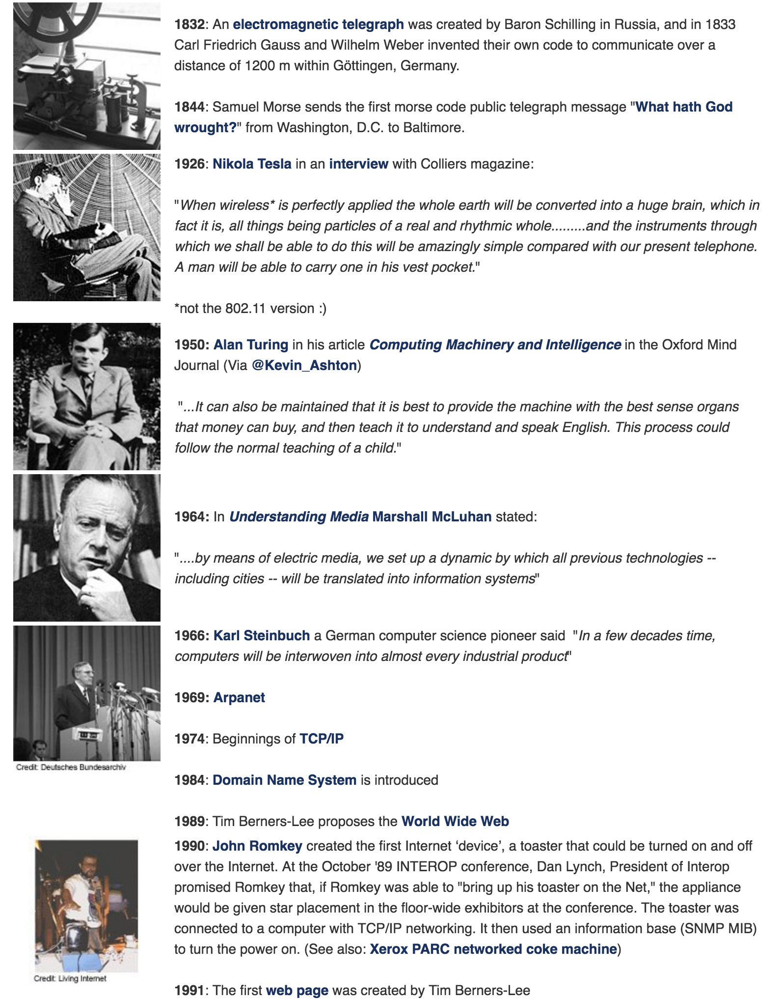
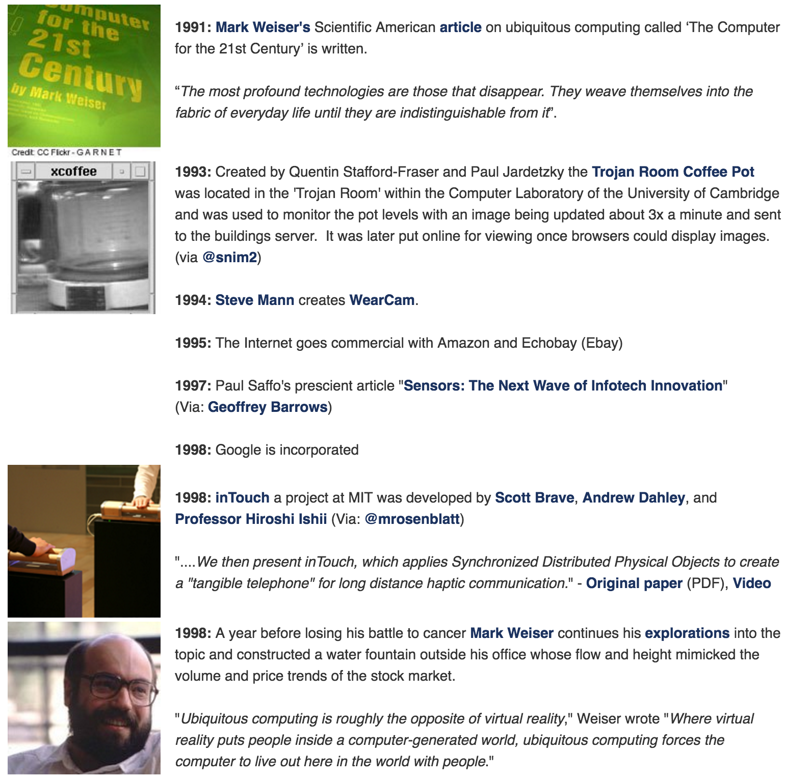
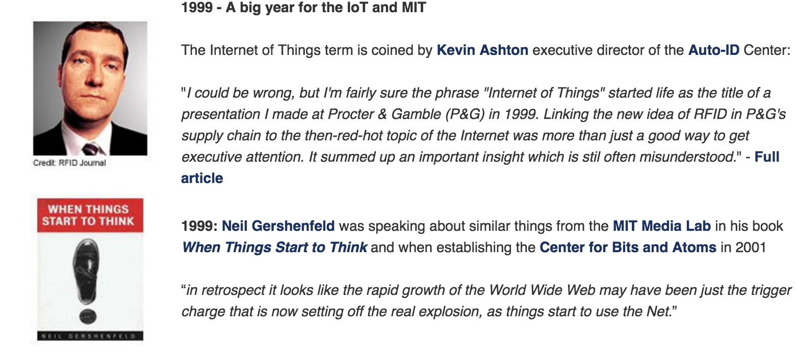
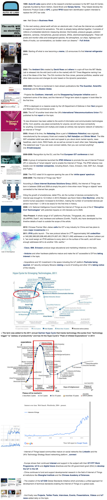

Segundo Albert Einsten "A mente que se abre a uma nova idéia, jamais voltará ao seu tamanho original". Sabias palavras que reflete o quanto Internet das Coisas promete uma visão ambiciosa e inovadora para o mundo.
Considerando o impacto do aumento das "coisas" é interessante conhecer a timeline de IoT. Para montar esse histórico extrai informações de artigos científicos 1 2, wiki da universidade Atlantica e postscapes.
Parte I: Parte precursora com diversas descobertas

Parte II: Início de IoT - Computação ubiqua adotada pelo Mark Wieser

Parte III: Mike Ashon do MIT conhou o termo Internet das Coisas

Parte VI: Disseminação do RFID e impacto nas empresas
